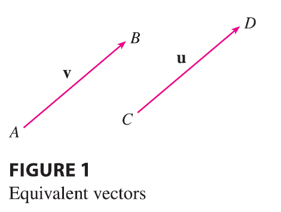

The term vector is used by scientists to indicate a quantity (such as displacement or velocity or force) that has both magnitude and direction.
A vector is often represented by an arrow or a directed line segment. The length of the arrow represents the magnitude of the vector and the arrow points in the direction of the vector. We denote a vector by printing a letter in boldface (v) or by putting an arrow above the letter (\(\vec{v}\)).

For instance, suppose a particle moves along a line segment from point A to point B. The corresponding displacement vector v, shown in Figure 1, has initial point A (the tail) and terminal point B (the tip) and we indicate this by writing \(\mathbf{v} = \vec{AB}\). Notice that the vector \(\mathbf{u} = \vec{CD}\) has the same length and the same direction as v even though it is in a different position. We say that u and v are equivalent (or equal) and we write \(\mathbf{u} = \mathbf{v}\). The zero vector, denoted by 0, has length 0. It is the only vector with no specific direction.